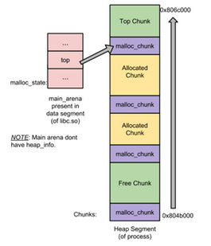
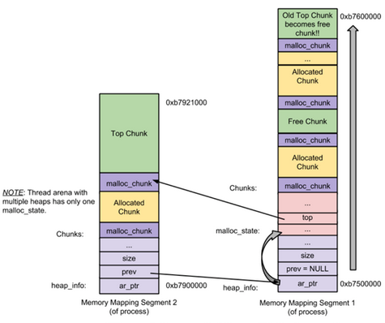
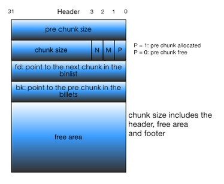
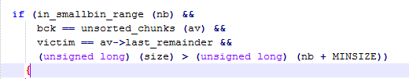

前言：
在读了Ptmalloc2源代码分析和阿里牛人文章Linux堆内存管理深入分析后，本文以一种 有序的知识点摘要形式重新梳理下堆内存管理知识，希望可以将堆内存管理知识点进行概括、总结、串联，本文适合对堆内存管理有一定零星了解，通过本文将知识点串起来。
基础概念
当前针对各大平台主要有如下几种堆内存管理机制：
- dlmalloc – General purpose allocator
- ptmalloc2 – glibc
- jemalloc – FreeBSD, Firefox, Android5.0-
- tcmalloc – Google
- libumem – Solaris
堆内存管理的核心目的是能够高效地分配和回收内存块(chunk)。
首次malloc申请内存（小于128k，大内存由mmap系统函数直接分配），查看进程maps文件可看出分配了132kb的堆内存（使用brk申请），这132KB的堆空间叫做arena，主线程分配的叫做main arena。
不是每次malloc申请内存都会用系统调用来映射内存，而是初次申请便映射一大块内存交由arena管理，由arena进行内存分配和回收。在主线程调用free之后：从内存布局可以看出程序的堆空间并没有被释放掉，而是由glibc的ptmalloc2使用arena结构进行管理。
主线程和子线程有自己独立的arena，新线程会通过nmap分配一个新的arena，但arena数量有限制：
For 32 bit systems: Number of arena = 2 number of cores + 1.
For 64 bit systems: Number of arena = 8 number of cores + 1.
当glibc能维护的arena个数已经达到上限，无法再为新线程分配新的arena，那么复用已存在的arena（遍历可用arena，lock成功后返回给线程，暂时无可用的会阻塞malloc操作直到可用）main arena被分配的内存空间是连续的，当管理的空闲内存不够分配时，通过系统调用sbrk扩展heap，堆空间是向上增长的，sbrk只需将arena管理的最高地址增加即可；而thread arena管理的内存区域可能不连续，初始化时或每次空间不够时，都是系统使用mmap分配一块内存，为了让这些分离的堆块方便管理，ptmalloc2在使用_heap_info数据结构将其联系起来。
在ptmalloc2中，chunk是堆内存管理单元，有4种类型，除了按是否空闲分为allocated chunk和malloc_chunk，还有两个特殊类型的chunk：top chunk和Last remainder chunk，其中：
- Top Chunk
当一个chunk处于一个arena的最顶部(即最高内存地址处)的时候，就称之为top chunk。在系统当前的所有空闲chunk都无法满足用户请求的内存大小的时候，将此chunk当做一个应急消防员，分配给用户使用。如果top chunk的大小比用户请求的大小要大的话，就将该top chunk分作两部分：1）用户请求的chunk；2）剩余的部分成为新的top chunk。否则，就需要扩展heap或分配新的heap了，在main arena中通过sbrk扩展heap，而在thread arena中通过mmap分配新的heap。 - Last Remainder Chunk
Last remainder是另外一种特殊的chunk，当需要分配一个small chunk，但找不到合适的chunk，如果last remainder chunk的大小大于所需的small chunk大小，last remainder chunk被分裂成两个chunk，其中一个chunk返回给用户，另一个chunk变成新的last remainder chuk。
- Top Chunk
到此为止，已经了解了arena、heaps、chunk的概念，现在可以通过两张图理解清楚它们之间的联系(图引自阿里云栖社区文章《Linux堆内存管理深入分析》)：
main_arena
图1：main arena内存布局 - 左上角是arana数据结构，右侧是被arena管理的一片连续的内存块；
- 可以看出内存块被割裂成3种chunk：top chunk，空闲chunk(即malloc_chunk，为malloc机制主要管理的chunk)，和以分配chunk(allocted chunk)，Last remainder属于特殊的空闲chunk，是分配samall chunk时产生的剩余，其空间中的位置会随时变化；
- top chunk在arena管理内存空间的最高地址，在内存不够时，可以直接向上扩展。因此，main arena中不存在heaps；
- arena的主要业务就是组织管理空闲chunk，回收已分配的chunk，并在合适的时机合并被隔离成碎片的空闲chunk;
thread arena
图2：thread arena内存布局 - 这是一个包含2个heap的thread arena，heap的起始地址处是heap_info数据结构，用来连接多个heap；
- 线程arena数据结构在第一个heap中，增加新的heap会改变arena数据结构中top chunk的指向（新分配的heap地址更高）；
- 另外，main arena数据结构是存放在libc.so的可写数据段中。
数据结构：chunk、bin及arena
堆内存管理单元chunk设计为方便分配和回收的数据结构，ptmalloc2将整个堆内存空间分成了连续的、大小不一的chunk（大小必须为8的倍数），下图为chunk基础数据结构：
图3：chunk的数据结构 - pre chunk size
前一个chunk的大小。只有在前一个chunk是空闲时才有用，在ptmalloc2做内存管理时索引前一个空闲chunk的地址（前一个chunk是空闲，如果当前chunk被释放时，会需要前一个空闲chunk的地址去完成两个连续空闲chunk的合并）；前一个chunk被分配时，可以做前一个chunk的用户空间。 - chunk size
当前chunk大小，包括给malloc调用者使用的空间和做内存管理的消耗空间，大小是8字节对齐，所以后3位可以作其它用。 - N/M/P标志位
N (NON_MAIN_ARENA)：表示当前chunk是否是thread arena。
M (IS_MMAPPED)：表示当前chunk是否是通过mmap系统调用产生的。
P (PREV_INUSE): 表示前一个chunk是否为allocated。 fd和bk
chunk空闲时会有，分别表示chunk双向链表的前向指针和后项指针。空闲chunk的数据结构定义：
struct malloc_chunk {
INTERNAL_SIZE_T prev_size; / Size of previous chunk (if free). /
INTERNAL_SIZE_T size; / Size in bytes, including overhead. /
// 这两个指针只在free chunk中存在
struct malloc_chunk fd;
struct malloc_chunk bk;
// 这两个指针只在large chunk中存在
struct malloc_chunk fd_nextsize;
struct malloc_chunk bk_nextsize;
};
通过大小去检索和操作前后chunk称为隐式链表技术。
- pre chunk size
- 组织空闲chunk的双向链表bin
ptmalloc2最核心的目的是管理空闲的chunk，已分配的chunk不做管理，主要业务是为malloc调用者提供最合适的空闲chunk，回收free后的chunk，因此设计了4种链表数组（数组元素存放chunk类型的链表指针）来满足用户对chunk不同大小的请求，这个链表数组被称为bins，每个数组元素为一个bin，每种不同的bins管理不同类型chunk，分别为：- Fast bins：用如其名，是最快的分配方式，数量为10个bin，chunk size分别为16到80字节；
- Unsorted bin： 暂不作分类的chunk都放在该bin下，数量为1个；
- Small bins: 小于512个字节时，分配该类bin下chunk，62个；
- Large bins: 大于512字节时。分配该类bin下的chunk，63个。
</br>
管理空闲chunk的arena结构
struct malloc_state
{
mutex_t mutex; / Serialize access. /int flags; / Flags (formerly in max_fast). /
mfastbinptr fastbinsY[NFASTBINS]; / Fastbins /
mchunkptr top; / Base of the topmost chunk — not otherwise kept in a bin /
mchunkptr last_remainder; / The remainder from the most recent split of a small request /
mchunkptr bins[NBINS * 2 - 2]; / Normal bins packed as described above /
unsigned int binmap[BINMAPSIZE]; / Bitmap of bins /
struct malloc_state next; / Linked list */
struct malloc_state next_free; / Linked list for free arenas. */
INTERNAL_SIZE_T system_mem; / Memory allocated from the system in this arena. /
INTERNAL_SIZE_T max_system_mem;
};
- arena管理内存的数据结构为malloc state；
- fastbinsY即为上文提到的fastbins，里面存放的是可用来快速分配的小chunk；
- top指向top chunk，top chunk是一种特殊的空闲chunk，也用来分配内存；
- last_remainder和top chunk一样；
- bins保存了usorted bin，samall bins, large bins，其中 bins[0]为unsorted bin，
bin[1:63]为small bin,bins[63:127]为large bin。
堆块的分配、释放与合并
堆块的分配
- 首先将用户请求大小转化为实际需要分配的堆块大小，加上chunk结构中presize和size大小；
- 如果chunk_size <= max_fast（默认64B），则尝试在fastbins中取所需大小的chunk返回，分配结束；（优先分配fastbins）
- 如果2不满足，如果chunk_size <= 521B（smallbins范围），则尝试在smallbins中取所需大小的chunk返回，分配结束(是否会切分较大的smallbin，将剩余部分放到unsorted bin，last remainder chunk指向剩余的chunk。)；
- 如果fastbins和smallbins都不满足，则首先合并fastbins，将合并后的chunk链入unsorted bin；然后遍历unsorted bin，如果满足：a.只有一个chunk;b.该chunk在上次分配被使用过；c.chunk大小属于small范围;d.chunk大于所需分配大小，则切分该chunk，分配结束，否则遍历unsorted bin将chunk放到对应的samll和large bins；
 - 到了这一步，fastbins、smallbins、unsortedbin都无合适的chunk分配，其中fastbins、unsortedbi已被清空。这时需从large bins中分配，从large bins中按照“smallest-first，best-fit”原则，找一个合适的 chunk，从中划分一块所需大小的chunk，并将剩下的部分链接回到bins中；
- 如果搜索fast bins和bins都没有找到合适的chunk，那么就需要操作top chunk来进行分配了。判断top chunk大小是否满足所需chunk的大小，如果是，则从top chunk中分出一块来。否则转到下一步。
- 到了这一步，说明top chunk也不能满足分配要求，所以，于是就有了两个选择: 如果是主分配区，调用sbrk()，增加top chunk大小；如果是非主分配区，调用mmap来分配一个新的sub-heap，增加top chunk大小；或者使用mmap()来直接分配。在这里，需要依靠chunk的大小来决定到底使用哪种方法。判断所需分配的chunk大小是否大于等于 mmap分配阈值，如果是的话，则转下一步，调用mmap分配，否则跳到第12步，增加top chunk 的大小。
堆块的释放
- free() 函数接受一个指向分配区域的指针作为参数，释放该指针所指向的chunk。
- 判断传入的指针是否为0，如果为0，则什么都不做，直接return。否则转下一步。
- 判断所需释放的chunk是否为mmaped chunk，如果是，则调用munmap()释放mmaped chunk，解除内存空间映射，该该空间不再有效。如果开启了mmap分配阈值的动态调整机制，并且当前回收的chunk大小大于mmap分配阈值，将mmap分配阈值设置为该chunk的大小，将mmap收缩阈值设定为mmap分配阈值的2倍，释放完成，否则跳到下一步。
- 判断chunk的大小和所处的位置，若chunk_size <= max_fast，并且chunk并不位于heap的顶部，也就是说并不与top chunk相邻，则将chunk放到fast bins中，chunk放入到fast bins中时，并不修改该chunk使用状态位P。也不与相邻的chunk进行合并。只是放进去，如此而已。这一步做完之后释放便结束了，程序从free()函数中返回。（因为与top chunk相邻的小chunk也和 top chunk进行合并，所以这里不仅需要判断大小，还需要判断相邻情况）
- 判断前一个chunk是否处在使用中，如果前一个块也是空闲块，则合并。
- 判断当前释放chunk的下一个块是否为top chunk（相较于当前chunk的高地址方向）（top chunk从低地址开始划分，向高地址扩展），如果是，与top chunk合并，并更新top chunk的大小等信息。
- 如下一个不是top chunk，判断下一个chunk是否处在使用中，如果下一个chunk也是空闲的，则合并，并将合并后的chunk放到unsorted bin中；
- 判断合并后的chunk 的大小是否大于FASTBIN_CONSOLIDATION_THRESHOLD（默认64KB），如果是的话，则会触发进行fast bins的合并操作，fast bins中的chunk将被遍历，并与相邻的空闲chunk进行合并，合并后的chunk会被放到unsorted bin中。fast bins将变为空，操作完成之后转下一步。
- 判断top chunk的大小是否大于mmap收缩阈值（默认为128KB），如果是的话，对于主分配区，则会试图归还top chunk中的一部分给操作系统。但是最先分配的128KB空间是不会归还的，ptmalloc 会一直管理这部分内存，用于响应用户的分配请求；如果为非主分配区，会进行sub-heap收缩，将top chunk的一部分返回给操作系统，如果top chunk为整个sub-heap，会把整个sub-heap还回给操作系统。
堆块的合并
- 堆块释放时，会判断当前 chunk 的相邻 chunk 是否为空闲状态，若是则会进行堆合并。合并时会将空闲 chunk 从 bin 中 unlink，并将合并后的 chunk 添加到 unsorted bin 中。堆合并分为向前合并和向后合并。
- 向后合并：
- 判断当前chunk的P(PREV_INUSE)标志位是否为0（0代表前一个chunk状态是free）；
- 前一个chunk若为空闲，则将当前chunk指向前一个，更新chunk size，释放前一个chunk；
- 更新合并后的chunk到bin中。
- 向前合并：
- 通过next->next->prev_inuse判断next chunk是否为空闲；
- 若为空闲，则更新合并后chunk大小，unlink next chunk；
- 更新合并后的chunk到bin中。
unlink：
- dlmlloc或ptmalloc2中定义unlink如下：
/ Take a chunk off a bin list /
#define unlink(P, BK, FD) {
FD = P->fd;
BK = P->bk;
FD->bk = BK;
BK->fd = FD;
} - Glibc 增加了安全检查：
/ Take a chunk off a bin list /
#define unlink(P, BK, FD) {
FD = P->fd;
BK = P->bk;
if (__builtin_expect (FD->bk != P || BK->fd != P, 0))
malloc_printerr (check_action, “corrupted double-linked list”, P);
else {
FD->bk = BK;
BK->fd = FD; …
}
}
bin链中该chunk的前chunk的bk和后chunk的fd都应该指向P，最后unlink被改写的也只能是存放P指针的前chunk->bk与后chunk->fd。
- dlmlloc或ptmalloc2中定义unlink如下：
参考
Linux堆内存管理深入分析 (上)
Linux堆内存管理深入分析 (下)
Glibc内存管理 Ptmalloc2源代码分析 庄明强
作者声明
本文版权归作者所有，旨在技术交流使用。未经作者同意禁止转载，转载后需在文章页面明显位置给出原文连接，否则相关责任自行承担。
This is copyright.